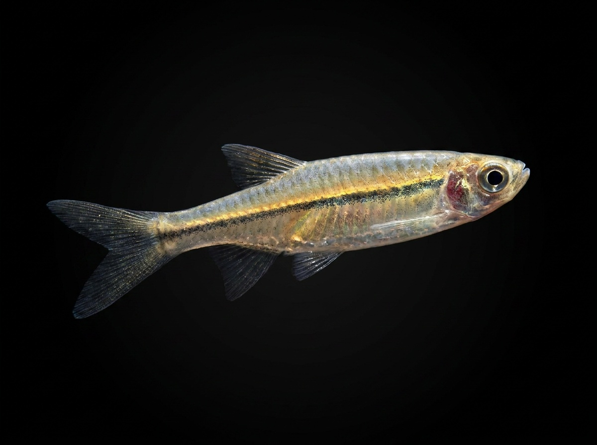

Flying Barb
Esomus thermoicos
The Flying Barb is a small freshwater fish native to Sri Lanka and is found in various lowland freshwater habitats, including streams, ponds, marshes, canals, and slow-moving sections of rivers. It is recognized by its long barbels around the mouth and its slender, elongated body adapted for quick movement near the water surface. This active schooling fish often swims in groups and is known for its ability to make rapid movements when disturbed, which is the reason behind its common name. It feeds mainly on small insects, insect larvae, plankton, and tiny aquatic organisms found near the surface of the water. The Flying Barb is an important native species in Sri Lanka’s freshwater ecosystems and is commonly associated with wetland and lowland aquatic environments.